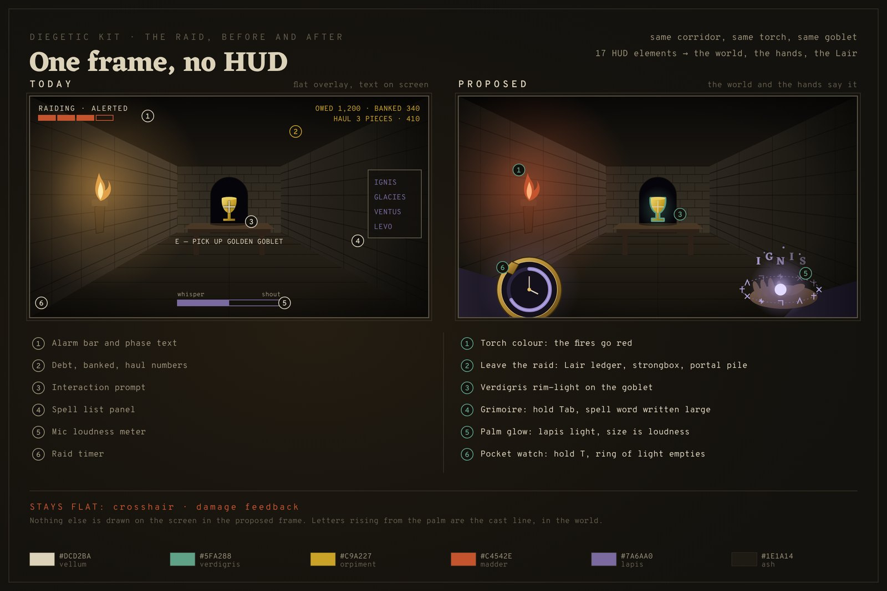
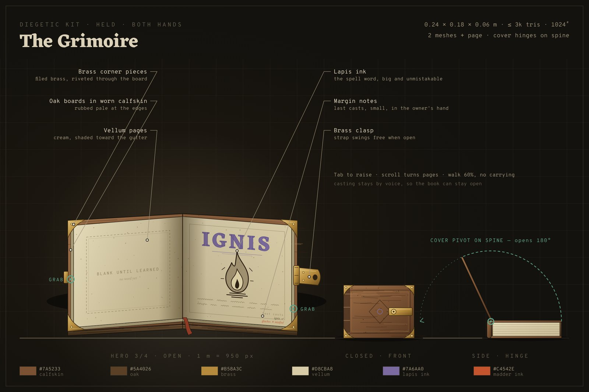
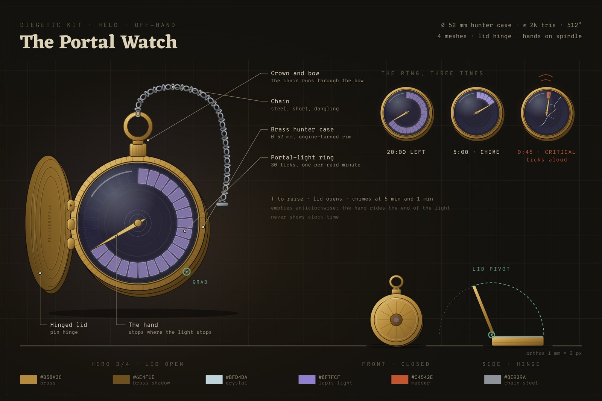
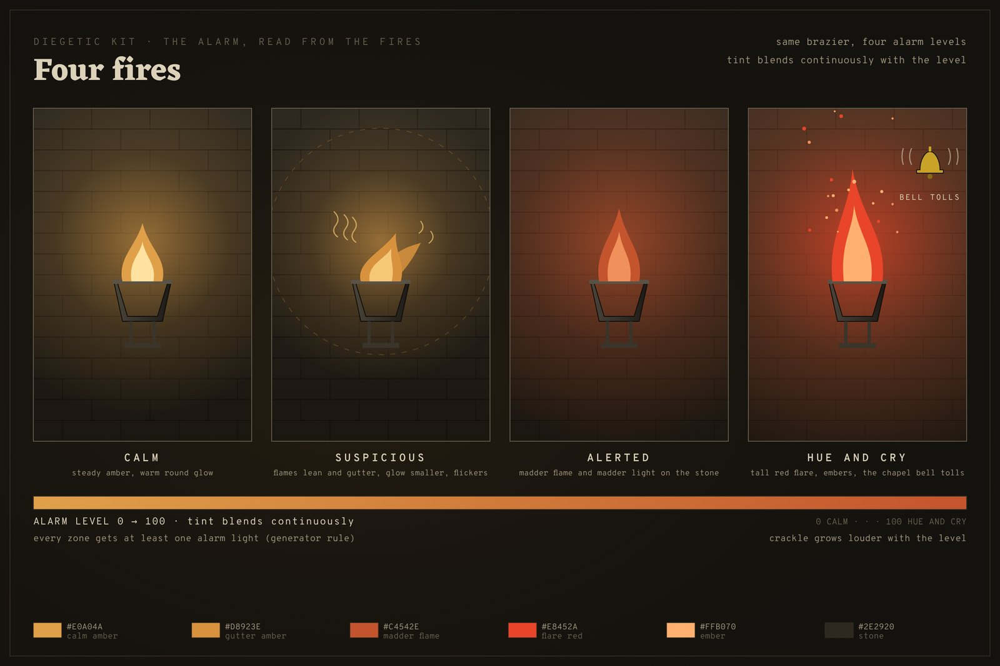
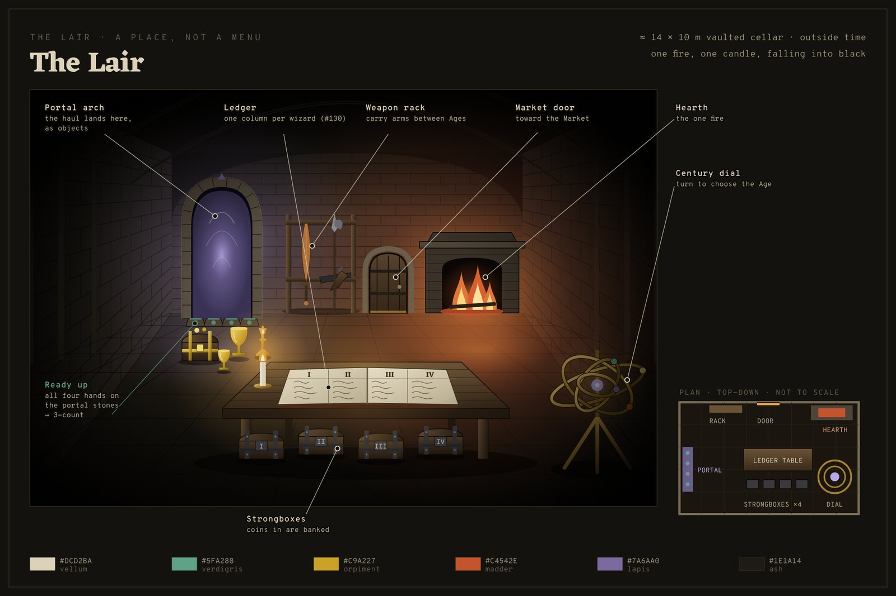
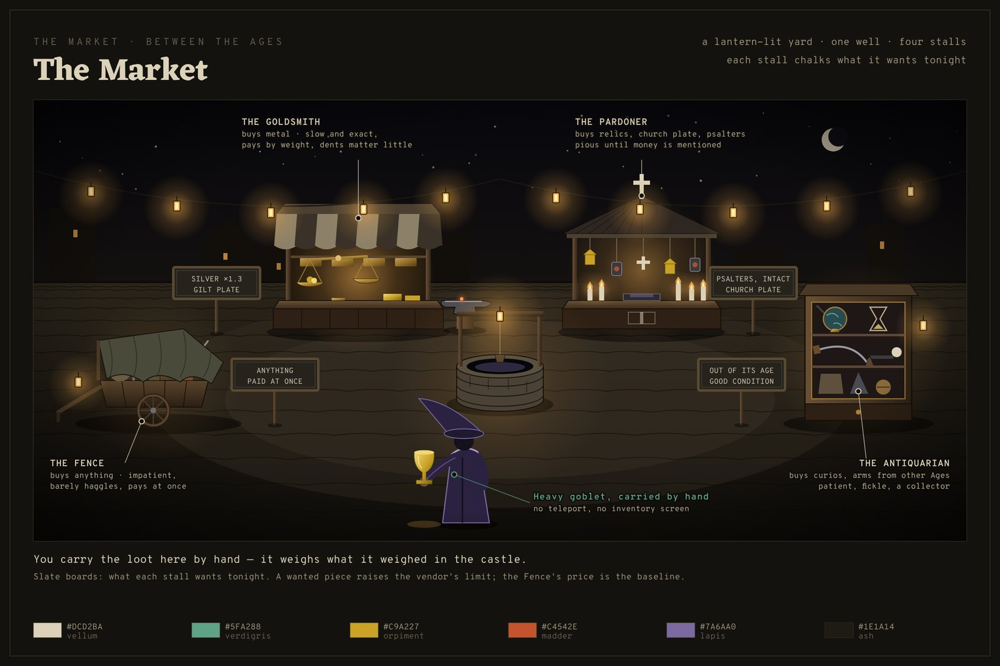
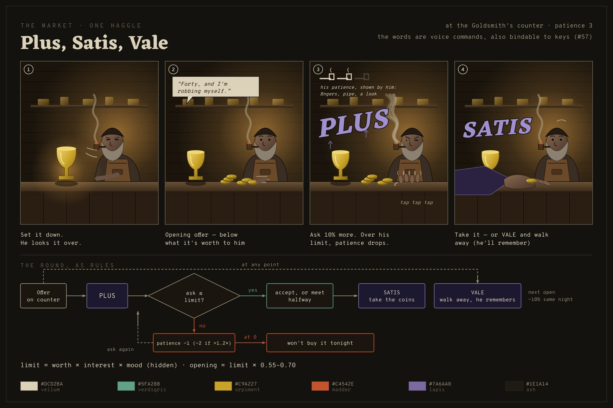

<title>Plunderspell Diegetic Proposal</title>
<link rel="stylesheet" href="https://fonts.googleapis.com/css2?family=Eczar:wght@600;700&family=Overpass+Mono:wght@400;600&family=Spectral:ital,wght@0,400;0,600;1,400&display=swap">
<style>
/* Layout: one reading column (~68ch) with full-bleed concept plates between sections; dark-first, the game's own pigments. */
:root {
  --ground: #14120E; --surface: #1E1A14; --line: #332D22;
  --text: #DCD2BA; --dim: #9A9078; --faint: #635C4C;
  --verdigris: #5FA288; --orpiment: #C9A227; --madder: #C4542E; --lapis: #9A8BC4;
  --display: "Eczar", Georgia, serif; --body: "Spectral", Georgia, serif;
  --mono: "Overpass Mono", ui-monospace, Menlo, monospace;
  color-scheme: dark;
}
@media (prefers-color-scheme: light) { :root:not([data-theme="dark"]) {
  --ground: #EFE9DA; --surface: #E5DDC9; --line: #CDBF9F;
  --text: #241F17; --dim: #5B5241; --faint: #84796290;
  --verdigris: #2F6E58; --orpiment: #8A6A0E; --madder: #A63E1C; --lapis: #5A4A86;
  color-scheme: light; } }
:root[data-theme="light"] {
  --ground: #EFE9DA; --surface: #E5DDC9; --line: #CDBF9F;
  --text: #241F17; --dim: #5B5241; --faint: #84796290;
  --verdigris: #2F6E58; --orpiment: #8A6A0E; --madder: #A63E1C; --lapis: #5A4A86;
  color-scheme: light; }
:root[data-theme="dark"] {
  --ground: #14120E; --surface: #1E1A14; --line: #332D22;
  --text: #DCD2BA; --dim: #9A9078; --faint: #635C4C;
  --verdigris: #5FA288; --orpiment: #C9A227; --madder: #C4542E; --lapis: #9A8BC4;
  color-scheme: dark; }

* { box-sizing: border-box; }
body { background: var(--ground); color: var(--text); font: 400 1.08rem/1.6 var(--body);
  padding-inline: 16px; padding-block: 0 4rem; }
main { max-width: 68ch; margin-inline: auto; display: grid; gap: 1.1rem; }
.plate { max-width: 1100px; width: 100%; justify-self: center; margin-block: .6rem 1rem;
  display: grid; gap: .4rem; }
.plate img { width: 100%; height: auto; border: 1px solid var(--line); display: block; }
.plate figcaption { font: 400 .78rem/1.45 var(--mono); color: var(--dim); }
.plate.pair { grid-template-columns: repeat(auto-fit, minmax(min(100%, 420px), 1fr)); gap: 1rem; }
.plate.pair figure { margin: 0; display: grid; gap: .4rem; }
main > .plate { width: min(1100px, calc(100vw - 32px)); }

header { padding-block: 3.2rem 1rem; display: grid; gap: .6rem; }
.eyebrow { font: 600 .74rem/1 var(--mono); letter-spacing: .22em; text-transform: uppercase; color: var(--faint); }
h1 { font: 700 clamp(2.1rem, 6vw, 3.4rem)/1.05 var(--display); margin: 0; text-wrap: balance; }
h2 { font: 700 1.7rem/1.15 var(--display); margin: 2.2rem 0 0; text-wrap: balance;
  padding-top: 1.2rem; border-top: 1px solid var(--line); }
h3 { font: 600 1.15rem/1.3 var(--display); margin: 1rem 0 0; }
p, li { margin: 0; }
ul, ol { margin: 0; padding-left: 1.3rem; display: grid; gap: .35rem; }
.lede { font-size: 1.2rem; color: var(--text); }
.status { font: 400 .8rem/1.5 var(--mono); color: var(--dim); }
.status b { color: var(--madder); font-weight: 600; }
em.word { font-style: italic; color: var(--lapis); font-weight: 600; }
code { font: 400 .86em var(--mono); color: var(--dim); }
.v { color: var(--verdigris); } .g { color: var(--orpiment); } .m { color: var(--madder); } .l { color: var(--lapis); }

.tablewrap { overflow-x: auto; border: 1px solid var(--line); }
table { border-collapse: collapse; width: 100%; font-size: .93rem; min-width: 560px; }
th, td { text-align: left; vertical-align: top; padding: .5rem .65rem; border-bottom: 1px solid var(--line); }
th { font: 600 .7rem/1.3 var(--mono); letter-spacing: .12em; text-transform: uppercase; color: var(--faint);
  background: var(--surface); }
td.n { font: 400 .8rem var(--mono); color: var(--faint); font-variant-numeric: tabular-nums; }
tr:last-child td { border-bottom: 0; }
.tag { font: 600 .68rem/1 var(--mono); letter-spacing: .1em; text-transform: uppercase;
  padding: .18rem .4rem; border: 1px solid currentColor; white-space: nowrap; }
.tag.keep { color: var(--verdigris); } .tag.drop { color: var(--faint); } .tag.repl { color: var(--lapis); } .tag.out { color: var(--orpiment); }

.haggle { display: grid; gap: .7rem; counter-reset: step; list-style: none; padding: 0; }
.haggle li { display: grid; grid-template-columns: 2.2rem 1fr; gap: .8rem; align-items: start; }
.haggle li::before { counter-increment: step; content: counter(step); font: 700 1.5rem/1 var(--display);
  color: var(--orpiment); text-align: right; padding-top: .1rem; }
.words { display: grid; grid-template-columns: repeat(auto-fit, minmax(min(100%, 170px), 1fr)); gap: .6rem; }
.words div { border: 1px solid var(--line); background: var(--surface); padding: .7rem .8rem; display: grid; gap: .2rem; }
.words b { font: 700 1.35rem/1 var(--display); color: var(--lapis); font-style: italic; }
.words span { font: 400 .78rem/1.4 var(--mono); color: var(--dim); }

.formula { font: 400 .86rem/1.7 var(--mono); background: var(--surface); border: 1px solid var(--line);
  padding: .9rem 1rem; overflow-x: auto; color: var(--text); }
.formula .c { color: var(--faint); }

.phases { list-style: none; padding: 0; display: grid; gap: .8rem; }
.phases li { border-left: 2px solid var(--line); padding-left: .9rem; display: grid; gap: .2rem; }
.phases li b { font: 600 .74rem/1 var(--mono); letter-spacing: .14em; text-transform: uppercase; color: var(--orpiment); }

.decisions { display: grid; gap: .7rem; padding-left: 1.4rem; }
.decisions li::marker { font: 700 1rem var(--display); color: var(--madder); }
footer { margin-top: 2.5rem; font: 400 .78rem/1.6 var(--mono); color: var(--faint); border-top: 1px solid var(--line); padding-top: 1rem; }
a { color: var(--verdigris); }
a:focus-visible { outline: 2px solid var(--verdigris); outline-offset: 2px; }
</style>

<main>
<header>
  <div class="eyebrow">Plunderspell · proposal · issue #284 · part of #174</div>
  <h1>The HUD goes into the world</h1>
  <p class="lede">During a raid the screen shows only the crosshair and damage feedback. You read your spells in a grimoire, check the portal's time on a pocket watch, and judge how awake the household is by the colour of its fires. Gold leaves the raid altogether: it lands in a Lair you can walk around, and you sell it in a Market to vendors who haggle.</p>
  <p class="status"><b>Proposal only</b> · 2026-10-06 · nothing is built · six decisions are yours, at the end</p>
</header>

<figure class="plate">
  
  <figcaption>Concept · the same frame today and as proposed. Source: docs/art/concept/raidview/raid-view.svg</figcaption>
</figure>

<h2>Why</h2>
<ul>
  <li>You asked for it: the spells become a book you open and close, and the rest of the UI is replaced by diegetic equivalents, meaning things that exist in the game world (#174).</li>
  <li>The pitch already argues for it: “It also lets a man read his own greed without a single number on the screen.” Today's raid HUD is mostly numbers.</li>
  <li>The Lair is a menu screen (#30, #31) and the Market doesn't exist (#26, #27). Building them as places gives the gold somewhere physical to land.</li>
  <li>Haggling makes selling a game, where today the haul is banked automatically. It's also the first time the voice is used outside a fight.</li>
</ul>

<h2>Every HUD element, accounted for</h2>
<p>Taken from the raid HUD's code on <code>main</code>. There are seventeen elements, plus the extraction countdown, and each one is kept, replaced or dropped. The crosshair and damage feedback stay flat on screen, as you chose.</p>
<div class="tablewrap"><table>
<thead><tr><th>#</th><th>On screen today</th><th>Becomes</th><th>Where</th></tr></thead>
<tbody>
<tr><td class="n">1</td><td>Phase text (“RAIDING”)</td><td><span class="tag drop">drop</span> Where you are already says it.</td><td>—</td></tr>
<tr><td class="n">2</td><td>Raid timer</td><td><span class="tag repl">watch</span> Hold <b>T</b>; the lid opens on a ring of portal-light that empties.</td><td>Off-hand</td></tr>
<tr><td class="n">3</td><td>Last-minute warning</td><td><span class="tag repl">watch</span> It ticks aloud, the ring turns red, and it chimes at 5 min and 1 min.</td><td>Off-hand, sound</td></tr>
<tr><td class="n">4</td><td>Alarm state</td><td><span class="tag repl">fires</span> Calm amber, guttering, red, then a flare with the bell tolling.</td><td>Every fire</td></tr>
<tr><td class="n">5</td><td>Alarm level bar</td><td><span class="tag repl">fires</span> How red the fires are, blended continuously.</td><td>Fires</td></tr>
<tr><td class="n">6</td><td>“E — pick up” prompt</td><td><span class="tag repl">rim-light</span> A <span class="v">verdigris</span> edge on what you can use; first-time hints live in the grimoire.</td><td>The object</td></tr>
<tr><td class="n">7</td><td>Has a target</td><td><span class="tag repl">rim-light</span> Same edge glow; the crosshair's own change stays.</td><td>Object, crosshair</td></tr>
<tr><td class="n">8</td><td>Carried item's name</td><td><span class="tag drop">drop</span> You can see what you hold.</td><td>—</td></tr>
<tr><td class="n">9</td><td>“Needs two”</td><td><span class="tag repl">grips</span> Two grip marks glow; alone, the grab beam strains red (it already does).</td><td>Object, beam</td></tr>
<tr><td class="n">10</td><td>Debt</td><td><span class="tag out">to Lair</span> The ledger, one column per wizard.</td><td>Lair</td></tr>
<tr><td class="n">11</td><td>Gold banked</td><td><span class="tag out">to Lair</span> Each wizard's strongbox.</td><td>Lair</td></tr>
<tr><td class="n">12</td><td>Haul in the portal</td><td><span class="tag drop">number</span> The pile on the pad is already physical; you learn its worth when you sell it.</td><td>Portal pad</td></tr>
<tr><td class="n">13</td><td>Crossbow loaded / reloading</td><td><span class="tag repl">weapon</span> A bolt sits on the stock when it's loaded, and you see and hear it reload.</td><td>The weapon</td></tr>
<tr><td class="n">14</td><td>Spell list</td><td><span class="tag repl">grimoire</span> Hold <b>Tab</b>. One spell per page; a page inks in when you learn its spell.</td><td>Both hands</td></tr>
<tr><td class="n">15</td><td>Last cast (clean / misfire / fizzle)</td><td><span class="tag repl">letters</span> The word rises from your hand: <span class="l">lapis</span>, <span class="m">madder</span>, or smoke. Teammates see it too.</td><td>Off-hand, world</td></tr>
<tr><td class="n">16</td><td>Mic loudness meter</td><td><span class="tag repl">palm glow</span> Size equals loudness: a whisper is an ember, and a shout throws sparks.</td><td>Off-hand</td></tr>
<tr><td class="n">17</td><td>Chant progress</td><td><span class="tag repl">runes</span> A ring of runes fills around the hand.</td><td>Off-hand</td></tr>
<tr><td class="n">+</td><td>Extraction countdown</td><td><span class="tag repl">portal</span> A ring of light on the floor closes around you, and the watch chimes when it's done.</td><td>Portal</td></tr>
<tr><td class="n">—</td><td>Crosshair · damage feedback</td><td><span class="tag keep">stays flat</span> Unchanged.</td><td>Screen</td></tr>
</tbody></table></div>

<h2>The two things in your hands</h2>
<div class="plate pair">
  <figure>
  <figcaption>The Grimoire · model issue #282</figcaption></figure>
  <figure>
  <figcaption>The Portal Watch · model issue #283</figcaption></figure>
</div>
<h3>Grimoire</h3>
<ul>
  <li>A quarto book, 24 × 18 × 6 cm: oak boards in worn calfskin, brass corners and clasp, vellum pages, with the spell words in lapis ink.</li>
  <li>Reading it takes both hands. You walk at 60% speed and can't carry anything, but you can still cast, because casting is by voice.</li>
  <li>The first page teaches the keys. After that there's one page per spell, blank until you learn it (ties into progressive unlocks, #108), and the margins keep your last few casts.</li>
  <li>It's two meshes plus a page, so Unity can swing the cover without a skeleton rig.</li>
</ul>
<h3>Portal watch</h3>
<ul>
  <li>A 52 mm brass hunter case with a hinged lid, crown and chain.</li>
  <li>The face isn't a clock. It's a ring of portal-light, marked in the raid's minutes, emptying anticlockwise, with one hand pointing at what's left.</li>
  <li>It takes the off-hand, so you can check it while carrying something one-handed. It chimes, so you also hear it without looking.</li>
</ul>

<h2>The alarm, read from the fires</h2>
<figure class="plate">
  
  <figcaption>Calm · Suspicious · Alerted · Hue and Cry. Source: docs/art/concept/raidview/alarm-fires.svg</figcaption>
</figure>
<p>Every hearth, brazier and torch in the castle follows the alarm. The castle generator would need a new rule: every zone gets at least one of them, or a room with no fire tells you nothing. This overlaps #278 (fire colour at night).</p>

<h2>The Lair, as a place</h2>
<figure class="plate">
  
  <figcaption>The Lair · one candle, one fire, falling away into black. Source: docs/art/concept/lair/lair.svg</figcaption>
</figure>
<ul>
  <li><b>The portal arch.</b> What you carried through lands here on the flagstones as real objects, and dead friends you carried out get up here.</li>
  <li><b>The ledger.</b> One column per wizard, because the debt is per player (#130). It shows what each owes, what's due tonight and what each has paid, written in by hand as payments land.</li>
  <li><b>Four strongboxes.</b> Coins put in are banked.</li>
  <li><b>The century dial.</b> An orrery of four rings, one per Age; you turn it to choose where the portal opens.</li>
  <li><b>The weapon rack</b>, for carrying arms from one Age into another, and <b>the Market door</b>.</li>
  <li><b>Ready up</b> by putting a hand on the portal stones. When all four are touching it, a three-count starts (#232).</li>
</ul>
<p>The main menu, settings and lobby stay flat screens. Only the Lair screen becomes a room.</p>

<h2>The Market, and haggling</h2>
<figure class="plate">
  
  <figcaption>The Market · four stalls between the Ages. Source: docs/art/concept/lair/market.svg</figcaption>
</figure>
<p>You carry your loot to the stalls by hand, and it weighs what it weighed in the castle. Each stall's slate board is chalked with what it wants tonight.</p>
<div class="tablewrap"><table>
<thead><tr><th>Vendor</th><th>Buys</th><th>Temperament</th><th>Pays more for</th></tr></thead>
<tbody>
<tr><td><b>The Fence</b></td><td>Anything</td><td>Impatient. Barely haggles, pays at once.</td><td>Nothing: he sets the baseline</td></tr>
<tr><td><b>The Goldsmith</b></td><td>Metal</td><td>Slow and exact. Weighs it on brass scales; dents hardly matter, because he melts it down.</td><td>Gold and silver by the stone</td></tr>
<tr><td><b>The Pardoner</b></td><td>Relics, church plate, psalters</td><td>Pious until money comes up.</td><td>Holy pieces, intact</td></tr>
<tr><td><b>The Antiquarian</b></td><td>Curios, arms from other Ages</td><td>Patient and fickle: a collector.</td><td>Anything out of its own century, in good condition</td></tr>
</tbody></table></div>

<figure class="plate">
  
  <figcaption>One haggle, step by step. Source: docs/art/concept/lair/haggle.svg</figcaption>
</figure>
<h3>One haggle</h3>
<ol class="haggle">
  <li><p><b>Set the piece on the counter.</b> The vendor looks it over and names an opening offer, below what it's worth to him, pushing the coins across as he says it.</p></li>
  <li><p><b>Answer with a word.</b> It's a voice game, so the words join the lexicon like spells, and each can also be bound to a key (#57).</p></li>
  <li><p><b>He answers.</b> If you're under his limit, he meets you or splits the difference. If you're over it, he refuses and his patience drops. When his patience runs out, he won't buy that piece tonight.</p></li>
  <li><p><b>You read his patience from him, not from a meter:</b> fingers tapping, a pipe puffed harder, a look, a line of speech. Every line is subtitled.</p></li>
</ol>
<div class="words">
  <div><b>Plus</b><span>“more” · ask 10% higher</span></div>
  <div><b>Satis</b><span>“enough” · take the coins</span></div>
  <div><b>Vale</b><span>“farewell” · take it back and go</span></div>
</div>
<h3>The numbers behind it</h3>
<div class="formula">
W = LootValue × condition<span class="c">            // what the piece is worth</span><br>
L = W × interest(0.6–1.5) × mood(0.85–1.15)<span class="c">  // his hidden limit</span><br>
opening = L × 0.55–0.70<br>
Plus: ask = coins on counter × 1.10<br>
&nbsp;&nbsp;ask ≤ L&nbsp;&nbsp;&nbsp;&nbsp;&nbsp;→ accepts, or meets you halfway<br>
&nbsp;&nbsp;ask &gt; L&nbsp;&nbsp;&nbsp;&nbsp;&nbsp;→ patience −1 (−2 above 1.2 × L)<br>
patience: Fence 1 · Goldsmith 3 · Pardoner 3 · Antiquarian 4<br>
Vale, then back the same night → opening 10% lower<span class="c">  // he remembers</span>
</div>
<p>A good haggler gets most of <span class="g">L</span>. A greedy one walks off with the piece still in their arms.</p>

<h3>Coins and the debt</h3>
<ul>
  <li>Coins are physical: each wizard has a pouch that gets heavier. You bank coins by putting them in your strongbox, and you can hand coins to a friend to pay their debt, or not (#130).</li>
  <li>The Collector calls at the Lair when you're back from the Market. He takes what's due from each strongbox and writes it in the ledger, and what's left is yours to spend. <span class="m">This differs from #29 as written; see decision 1.</span></li>
  <li>Buying happens at the same stalls, always priced above the same item's raid worth (#29's mark-up rule).</li>
</ul>

<h2>What gets modelled</h2>
<p>This is the Blender 5 session's list. The props go through the repo's asset pipeline, and the vendors through the enemy pipeline.</p>
<div class="tablewrap"><table>
<thead><tr><th>Model</th><th>Pieces</th><th>Issue</th></tr></thead>
<tbody>
<tr><td>Grimoire</td><td>body, cover, page</td><td>#282</td></tr>
<tr><td>Portal watch</td><td>case, lid, two hands</td><td>#283</td></tr>
<tr><td>Palm glow, rune ring, rising letters</td><td>effects, not meshes</td><td>new</td></tr>
<tr><td>Fire-state lighting</td><td>on the existing fires</td><td>new · #278</td></tr>
<tr><td>Lair cellar, hearth</td><td>room shell</td><td>new · #31</td></tr>
<tr><td>Ledger table, ledger, 4 strongboxes</td><td>props</td><td>new · #33</td></tr>
<tr><td>Century dial</td><td>four turning rings</td><td>new</td></tr>
<tr><td>Weapon rack, Market door</td><td>props</td><td>new</td></tr>
<tr><td>Market yard, well, 4 stalls, slates</td><td>room shell, props</td><td>new · #27</td></tr>
<tr><td>Goldsmith's scales</td><td>beam, two pans</td><td>new</td></tr>
<tr><td>Coin, stack, pouch</td><td>props</td><td>new</td></tr>
<tr><td>Four vendors</td><td>rigged characters, idle and talk</td><td>new · the biggest single cost</td></tr>
</tbody></table></div>

<h2>In what order</h2>
<ol class="phases">
  <li><b>Phase 1 · the raid</b><span>Grimoire, watch, fire lighting, palm glow, rim-light; then delete the HUD elements they replace. Until phase 2, debt and haul show on the existing Lair screen.</span></li>
  <li><b>Phase 2 · the Lair as a room</b><span>Cellar, the landing pile, ledger and strongboxes, the century dial, ready-up at the portal. Selling is automatic at the Fence's price for now, so the loop keeps working.</span></li>
  <li><b>Phase 3 · the Market</b><span>Yard, stalls, haggling with stand-in vendors (a figure behind the counter, plus subtitles), coins, the Collector, buying.</span></li>
  <li><b>Phase 4 · the vendors</b><span>Models, animation and their tells; voiced lines.</span></li>
</ol>
<p>Each phase ships alone and can be played.</p>

<h2>Risks</h2>
<ul>
  <li><b>New players won't know the keys.</b> The grimoire's first page teaches them, and the book opens by itself at the first raid. This needs a playtest.</li>
  <li><b>Fires only work as the alarm where there are fires.</b> That needs the generator rule above.</li>
  <li><b>Without numbers on screen, balance is harder to judge.</b> Development builds keep a debug overlay.</li>
  <li><b>The three haggling words have to be recognised.</b> They're added to the lexicon and tested exactly like spell words.</li>
  <li><b>Scope.</b> Phase 4 alone is four characters. Phases 1–3 are worth building without it.</li>
</ul>

<h2>Your decisions</h2>
<ol class="decisions">
  <li><b>Debt order.</b> Is the debt taken before you can spend anything (#29 as written), or after the Market by the Collector (proposed)?</li>
  <li><b>Haggling input.</b> Spoken words (<em class="word">Plus</em>, <em class="word">Satis</em>, <em class="word">Vale</em>, also bindable to keys), or mouse buttons only?</li>
  <li><b>Coins.</b> Physical pouches you carry and hand over, or a simple purse total per wizard?</li>
  <li><b>Reading the grimoire.</b> Should it slow you and stop you carrying, as proposed?</li>
  <li><b>The watch face.</b> A portal-light ring (proposed), or ordinary hands counting down?</li>
  <li><b>Keys.</b> <b>Tab</b> for the grimoire and <b>T</b> for the watch, or others?</li>
</ol>

<footer>
  Written plan: docs/plans/diegetic-ui-lair-market.md · Concept sheets: docs/art/concept/diegetic/, raidview/, lair/ · Branch claude/diegetic-lair-market-proposal · Issue #284
</footer>
</main>
